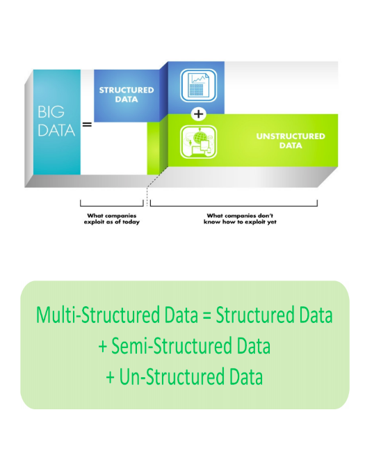

Why Big Data Is Most Sought-after?¶
As the Big Data buzz is getting louder with Volume, Varity and Velocity, trained hadoopers equipped with the right skills to process the big data through Hadoop are the most most wanted in Fortune 500 cpmpanies worldwide. This has greatly increased the career scope for trained hadoop in comparison to their peers. Microsoft, Software AG, IBM, Oracel, HP, SAP, EMC2 & Dell have invested a huge $15 billion billion on Big Data analytics. Below are well known facts as to why one should opt for the Big Data & Hadoop training:
According to Gartner- “Big Data & Analytics is one of the Top 10 Strategic technologies for businesses and there would be 4.4 Million Big Data jobs by 2015”.
According to IDC- “Big Data market would grow up to 16.1 billion”.
Velocity¶
is the speed in which data is accessible. I remember the batches, now if it’s not real-time it’s usually not fast enough.
Varity¶
describes one of the biggest challenges of big data. It can be unstructured and it can include so many different types of data from XML to video to SMS. Organizing the data in a meaningful way is no simple task, especially when the data itself changes rapidly.
Volume¶
Volume is how much data we have – what used to be measured in Gigabytes is now measured in Zettabytes (ZB) or even Yottabytes (YB). The IoT (Internet of Things) is creating exponential growth in data.
Veracity¶
Veracity is all about making sure the data is accurate, which requires processes to keep the bad data from accumulating in your systems. The simplest example is contacts that enter your marketing automation system with false names and inaccurate contact information. How many times have you seen Mickey Mouse in your database? It’s the classic “garbage in, garbage out” challenge.
Visualization¶
Visualization is critical in today’s world. Using charts and graphs to visualize large amounts of complex data is much more effective in conveying meaning than spreadsheets and reports chock-full of numbers and formulas.
Variability¶
Variability is different from variety. A coffee shop may offer 6 different blends of coffee, but if you get the same blend every day and it tastes different every day, that is variability. The same is true of data, if the meaning is constantly changing it can have a huge impact on your data homogenization.
Value¶
Value is the end game. After addressing volume, velocity, variety, variability, veracity, andvisualization – which takes a lot of time, effort and resources – you want to be sure your organization is getting value from the data.
